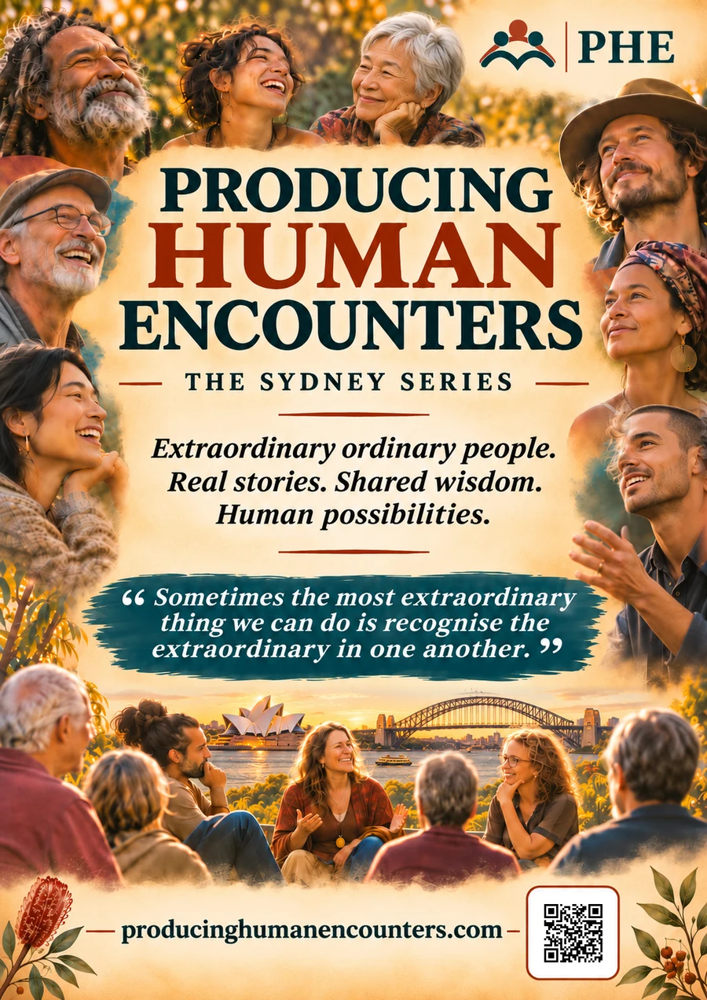
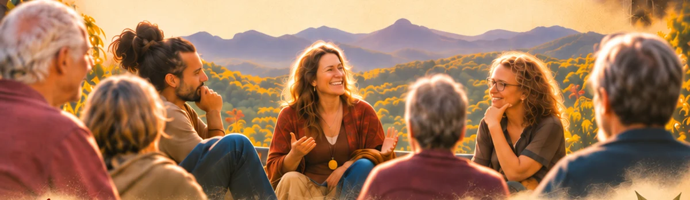

Producing Human Encounters
The Sydney Series
Extraordinary ordinary people. Real stories. Shared wisdom. Human possibilities.
A gathering for people whose experiences rarely cross paths, bringing stories from across Sydney into the same room.
Be Part of Something Extraordinary Explore all cities

The experience
Real stories. Shared wisdom.
Each gathering brings together around 12–15 featured people from different walks of life, alongside an audience. Guests share the stories, knowledge and experience they’ve gained. Then the room opens to conversation, learning and connection.
We welcome people from education, business, community, the arts, innovation, care, the environment and philosophy, and anyone with remarkable life experience to share.

“Sometimes the most extraordinary thing we can do is recognise the extraordinary in one another.”
Get involved / Sydney
Be Part of Something Extraordinary
Everyone has a story. Some stories deserve to travel further.
Come to listen, share something you’ve lived or introduce us to someone whose story deserves to be heard.
These links open a draft in your email app. Review it and send it when you’re ready.
Venue and community partner enquiriesAcross Australia